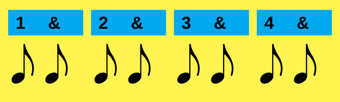
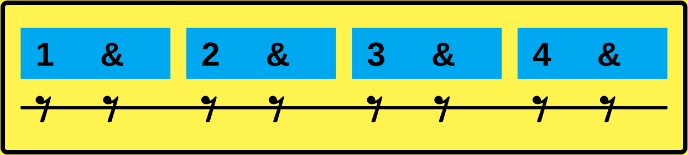
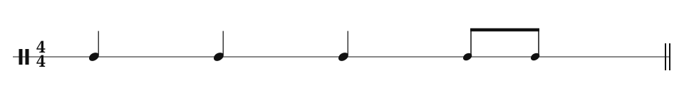
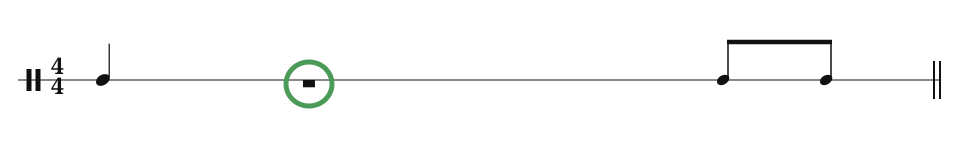
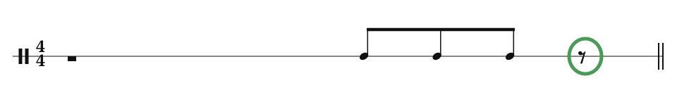
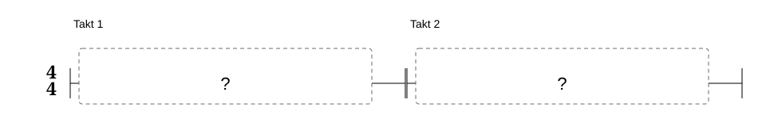

Reserve · Ganze Pausen mit Achtelnoten

Dein Ziel
Am Ende dieses Kurses kannst du:
- Achtelnoten und Achtelpausen erkennen und ihre Dauer bestimmen,
- alle Achtelpositionen eines 4/4-Takts zählen und körperlich markieren,
- Achtel mit längeren Notenwerten und Pausen verbinden,
- gemischte Rhythmen lesen, hören, schreiben und mit gleichmäßigem Puls ausführen.
Rhythmus 2 / Kapitel 01
Achtelnoten
Teile jeden Viertelschlag in zwei gleiche Positionen: die Zahl und das „&“. Halte den Puls dabei gleichmäßig.

Lektion 01 / Achtelnoten
Zwei Noten pro Schlag.
1. Erklärung
Eine Achtelnote dauert einen halben Schlag. Ein 4/4-Takt hat also acht dieser Noten. Wir zählen jetzt:
1 & 2 & 3 & 4 &
Der Fuß bleibt unverändert.

2. Körperübung
Klatsche nur auf 1, 2, 3 und 4 und senke dabei den Fuß. Hebe ihn auf jedem „&“ deutlich an. Spüre die Aufwärtsbewegung und zähle laut mit.
3. Mitspielübung
Es wird zunächst durch das Metronom ein Takt eingezählt. Dann werden die Achtel gespielt. Dann setzen die Achtel jeweils einen Takt aus. Versuche, das Muster weiterzuspielen, auch wenn die Achtel nicht vorgegeben sind.
Mitspielübung 1 · Jede Achtelposition
In der ersten Mitspielübung spielen wir jede Achtelnote im Takt, also jede Achtelposition.

Mitspielübung 2 · Nur die „&“-Zählzeiten
In der zweiten Mitspielübung spielen wir nur die „&“-Zählzeiten. Achte darauf, wie sprunghaft diese sich anfühlen!
1 & 2 & 3 & 4 &
![Takt 1: ganze Pause. Takt 2: Achtelpause, Achtelnote, Achtelpause, Achtelnote, Achtelpause, Achtelnote, Achtelpause, Achtelnote. Takt 3: ganze Pause. Takt 4: Achtelpause, Achtelnote, Achtelpause, Achtelnote, Achtelpause, Achtelnote, Achtelpause, Achtelnote. Takt 5: ganze Pause. Takt 6: Achtelpause, Achtelnote, Achtelpause, Achtelnote, Achtelpause, Achtelnote, Achtelpause, Achtelnote. Takt 7: ganze Pause. Takt 8: Achtelpause, Achtelnote, Achtelpause, Achtelnote, Achtelpause, Achtelnote, Achtelpause, Achtelnote](assets/kapitel-2/noten-115.svg)
4. Leseübung
Rhythmen lesen. Zählen. Stampfen. Klatschen. Lösung prüfen.
Leseübung 1

Lösung 1 zur Leseübung anzeigen
Leseübung 2

Lösung 2 zur Leseübung anzeigen
5. Höraufgabe
Da das Heraushören und Transkribieren von Achtelnoten eine echte Herausforderung darstellt, sind die Höraufgaben jetzt kürzer. Der herauszuhörende Takt wird viermal wiederholt.
Höraufgabe 1
Lösung 1 anzeigen

Höraufgabe 2
Lösung 2 anzeigen
Höraufgabe 3
Lösung 3 anzeigen

Höraufgabe 4
Lösung 4 anzeigen
Glückwunsch! Du kannst jede Achtelposition im Takt markieren.
Lektion 02 / Gemischte Notenwerte
Jetzt kommt alles zusammen.
Jetzt kombinieren wir alle bisher gelernten Notenwerte.
Es kommen noch keine Pausen vor.
Aufgabe 1 · Takte vervollständigen
Ergänze die fehlenden Notenwerte. Es gibt meistens mehrere richtige Lösungen.
![Takt 1: Note (1 Schläge), Note (0.5 Schläge), Note (0.5 Schläge), Lücke, Note (0.5 Schläge), Note (0.5 Schläge). Takt 2: Lücke, Note (0.5 Schläge), Note (0.5 Schläge), Note (0.5 Schläge), Note (0.5 Schläge), Lücke, Note (0.5 Schläge). Takt 3: Lücke, Note (0.5 Schläge), Note (0.5 Schläge), Note (0.5 Schläge), Note (0.5 Schläge), Note (0.5 Schläge). Takt 4: Lücke, Note (1 Schläge), Note (0.5 Schläge), Note (0.5 Schläge). Takt 5: Note (0.5 Schläge), Note (0.5 Schläge), Lücke, Note (0.5 Schläge), Note (0.5 Schläge), Note (0.5 Schläge). Takt 6: Lücke. Takt 7: Note (2 Schläge), Note (1 Schläge), Note (1 Schläge). Takt 8: Note (1 Schläge), Lücke](assets/kapitel-2/bild-160-interaktiv.svg)
Aufgabe 2 · Finde den Fehler im Takt
Höre den Takt im Rhythm Radio oder in der bisherigen MP3. Derselbe Takt wird viermal wiederholt.
Vergleiche das, was du hörst, mit der Notation, finde den Fehler und korrigiere ihn. Kontrolliere danach mit der Lösung, ob du den Fehler korrekt identifiziert und korrigiert hast.
Aufgabe 1.1

Lösung 1 anzeigen

Aufgabe 2.1

Lösung 2 anzeigen

Aufgabe 3.1

Lösung 3 anzeigen
Aufgabe 3 · Eigene Takte schreiben
Schreibe vollständige 4/4-Takte. Verwende unterschiedliche Kombinationen.
Stampfe mit dem Fuß die Schläge und klatsche deine Noten deutlich. Spiele den Rhythmus dann auf deinem Instrument.

Glückwunsch! Du kannst Achtelnoten mit längeren Notenwerten kombinieren.
Rhythmus 2 / Kapitel 02
Achtelpausen
Die Achtelpause dauert ebenfalls einen halben Schlag. Der Puls läuft weiter, auch wenn es still bleibt.
Achtelnote & Achtelpause ½ Schlag

Lektion 01 / Achtelpause
Ein halber Schlag Stille.
1. Erklärung
Eine Achtelpause dauert einen halben Schlag. Wir zählen:
1 & 2 & 3 & 4 &
2. Körperübung
Dein Fuß bewegt sich abwechselnd nach unten und oben. Zähle dabei 1 & 2 & 3 & 4 &.
Halte die Pausen mit geschlossenen Händen und spüre sie. Du kannst sie auch durch Schwingen der Hände markieren. Achte darauf, dich auf den „&“-Zählzeiten nach oben zu bewegen.
3. Leseübungen
Rhythmen lesen und klatschen. Lege nun besonderen Wert darauf, die Pausen aktiv zu spüren.
Leseübung 1

Lösung zur Leseübung 1 anzeigen
Leseübung 2
Lösung zur Leseübung 2 anzeigen
Leseübung 3
Lösung zur Leseübung 3 anzeigen
Leseübung 4
Diese Übung ist in der Vorlage noch nicht ausgefüllt. Fahre mit Leseübung 5 fort.
Leseübung 5
Lösung zur Leseübung 5 anzeigen
Leseübung 6 · Nirvana – CAYR

Lösung zur Leseübung 6 anzeigen
Leseübung 7 · Bob Marley – CYBL

Lösung zur Leseübung 7 anzeigen
4. Höraufgaben
Welche Notation hörst du? Schreibe sie auf.
Höraufgabe 1
Lösung 1 anzeigen
Höraufgabe 2
Lösung 2 anzeigen

Höraufgabe 3
Lösung 3 anzeigen

Glückwunsch! Du kannst Achtelpausen im Puls halten.
Lektion 02 / Gemischte Rhythmen mit Pausen
Klang und Stille verbinden.
Jetzt kombinieren wir:
Aufgabe 1 · Pausenlängen zuordnen
Diese Übung ist dazu da, dir die Notenwerte noch einmal bewusst zu machen. In den meisten Fällen würden wir beispielsweise eine ganze Pause nicht durch vier Viertelpausen ersetzen. Jetzt wollen wir allerdings testen, ob du weißt, welche Pause wie lang ist.
Wir sind im 4/4-Takt!
Aufgabe 1 von 5
Wie viele Viertelpausen sind so lang wie eine ganze Pause?
Wie viele Achtelpausen sind so lang wie zwei Viertelpausen?
Wie viele Achtelpausen sind so lang wie drei Viertelpausen?
Wie viele Achtelpausen sind so lang wie eine halbe Pause?
Wie viele Viertelpausen sind so lang wie eine halbe Pause?
Bisherige Aufgaben und Lösungen anzeigen
1. Wie viele Viertelpausen sind so lang wie eine ganze Pause?
Kontrolle anzeigen
4 Viertelpausen. 4 Schläge ÷ 1 = 4.
2. Wie viele Achtelpausen sind so lang wie zwei Viertelpausen?
Kontrolle anzeigen
4 Achtelpausen. 2 Schläge ÷ ½ = 4.
3. Wie viele Achtelpausen sind so lang wie drei Viertelpausen?
Kontrolle anzeigen
6 Achtelpausen. 3 Schläge ÷ ½ = 6.
4. Wie viele Achtelpausen sind so lang wie eine halbe Pause?
Kontrolle anzeigen
4 Achtelpausen. 2 Schläge ÷ ½ = 4.
5. Wie viele Viertelpausen sind so lang wie eine halbe Pause?
Kontrolle anzeigen
2 Viertelpausen. 2 Schläge ÷ 1 = 2.
Abschlussaufgabe 2 · Takte vervollständigen
Jetzt verwendest du Noten und Pausen gemeinsam. Jeder Takt muss genau vier Schläge enthalten.
Aufgabe 2.1

Aufgabe 2.2
Aufgabe 2.3
Aufgabe 3 · Finde den Fehler im Takt
Ergänze fehlende Noten oder Pausen. Mehrere Lösungen sind oft möglich.
Aufgabe 3.1

Lösung 3.1 anzeigen
Die Noten in diesem Takt ergeben einen 5/4-Takt. Es ist ein Schlag zu viel!

Aufgabe 3.2
Lösung 3.2 anzeigen
Statt der Viertelpause ist in der MP3 eine halbe Pause ab Schlag 2 zu hören.

Aufgabe 3.3
Lösung 3.3 anzeigen
In der MP3 sind nur drei Achtelnoten zu hören. Daher muss auf der Zählzeit 4& eine Achtelpause sein.

Aufgabe 4 · Eigene Takte schreiben
Schreibe zwei vollständige 4/4-Takte mit mindestens einer Achtelpause und einer Note. Klatsche deine Takte danach im Rhythminator.

Aufgabe 5 · Spiele deine Rhythmen
- Stampfe den Puls.
- Zähle laut.
- Klatsche nur die Noten.
- Halte jede Pause exakt ein.
- Spiele die Rhythmen anschließend auf deinem Instrument.
Glückwunsch! Du kannst deine eigenen Rhythmen mit Achtelnoten und Achtelpausen spielen.
Zum Abschluss
Noten und Stille verbinden.
Du kannst Achtelnoten und Achtelpausen erkennen, zählen und in vollständigen Takten verwenden. Übe die Aufgaben mit gleichmäßigem Metronom-Puls, bis die Zahl- und „&“-Positionen sicher sitzen.
Weiter zu Rhythmus 3 · Sechzehntelnoten ↗Buch der Fähigkeiten
Hier stehen deine Fähigkeiten, sobald du im Kurs Ziele abhakst.